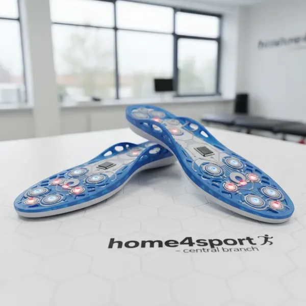
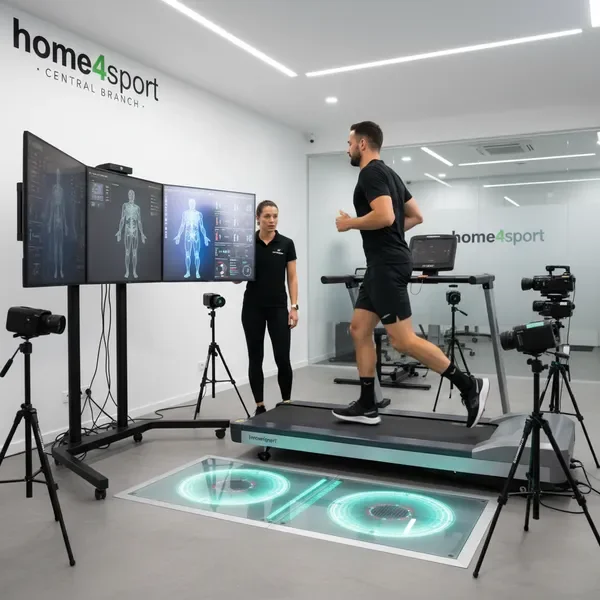
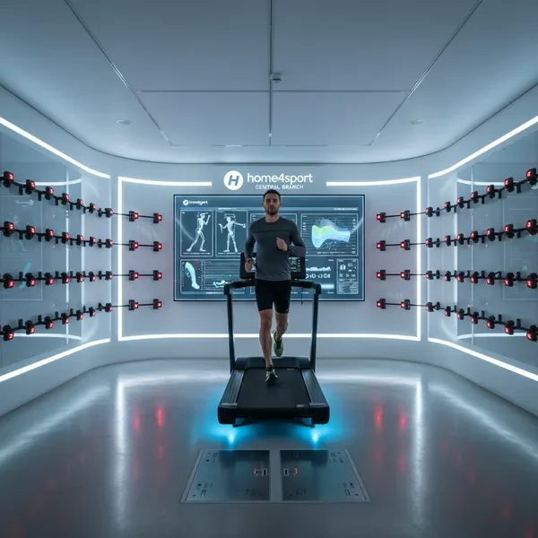
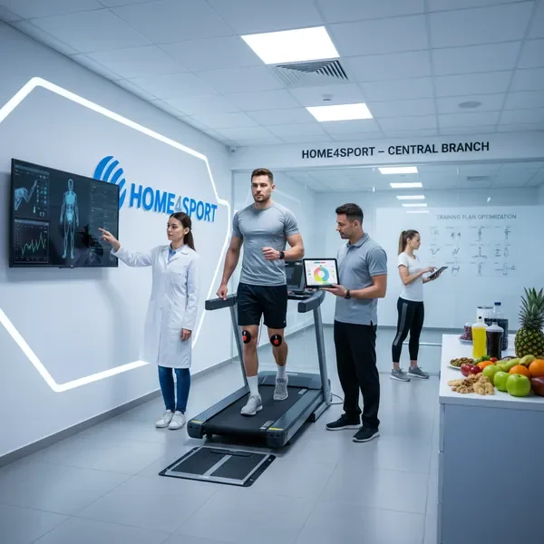

בית לספורטאים גאה להיות המפיץ הבלעדי בישראל של מדרסי ScanandSole, הטכנולוגיה המובילה בעולם לניתוח ביומכני לרצים במרכז. המדרסים שלנו מיוצרים בטכנולוגיה חדשנית שאינה דורשת מגע ידי אדם, ומספקים התאמה מדויקת ואישית לכל ספורטאי.
עם 12 סוגים שונים של מדרסים, אנחנו מציעים פתרון מושלם לכל בעיות כף הרגל. המדרסים מתאימים לכל סוג נעל ומתוכננים לשפר את יעילות הריצה, להפחית לחץ ולמנוע פציעות.
התאמת נעלי ריצה אישית היא שירות קריטי לכל רץ שרוצה למקסם את הביצועים ולמנוע פציעות. המומחים שלנו מבצעים ניתוח מקיף של דפוס הריצה שלכם, כולל בדיקת הליכה, ריצה על הליכון, וניתוח ביומכני מפורט.
בעזרת הציוד המתקדם במעבדת הריצה המקצועית שלנו, אנחנו מזהים את סוג כף הרגל שלכם, דפוס הפרונציה, נקודות לחץ ומאפיינים ייחודיים נוספים. על בסיס הניתוח, אנחנו ממליצים על הנעליים המתאימות ביותר מבין מגוון רחב של מותגים ודגמים.


מעבדת הריצה המקצועית שלנו מצוידת בטכנולוגיה המתקדמת ביותר לניתוח ביומכני לרצים במרכז. אנחנו מציעים ניתוח מקיף של טכניקת הריצה שלכם, כולל זיהוי נקודות תורפה, דפוסי תנועה לא יעילים וגורמים פוטנציאליים לפציעות.
הניתוח כולל ריצה על הליכון עם מצלמות מהירות, לוחות כוח למדידת כוח הפגיעה, ניתוח תנועה תלת-מימדי ועוד. בסיום הניתוח, תקבלו דוח מפורט עם המלצות לשיפור הטכניקה, תוכנית אימונים מותאמת והמלצות לציוד.
מעטפת 360 היא השירות המקיף ביותר שלנו, המיועד לספורטאים ברמה המקצועית הגבוהה ביותר. זהו פתרון הוליסטי שמשלב את כל השירותים שלנו - ניתוח ביומכני מלא, התאמת מדרסים, בחירת נעליים, תוכנית אימונים אישית ומעקב שוטף.
המעטפת כוללת פגישות תקופתיות למעקב אחר ההתקדמות, התאמות נוספות לפי הצורך, ייעוץ תזונתי ושירותי תמיכה נוספים. זהו הפתרון המושלם לרצים שרוצים למקסם את הביצועים ולהגיע לרמה הבאה.

שיפור הטכניקה לריצה יעילה יותר, הפחתת כוח פגיעה והגברת מהירות. המומחים שלנו יעזרו לכם לתקן הרגלים לא נכונים.
זיהוי גורמי סיכון לפציעות והמלצות למניעה. כולל תרגילי חיזוק, מתיחות ושינויים בטכניקה.
תוכניות אימון מותאמות אישית לכל רמה ויעד, מהכנה למרוץ ראשון ועד שיפור שיא אישי.
כל שירות מותאם אישית לצרכים שלכם. אנחנו ממליצים להתחיל בפגישת ייעוץ ראשונית בה נבין את היעדים שלכם, ההיסטוריה הספורטיבית ונקבע את מסלול הטיפול המתאים.
לאחר הפגישה הראשונית, נקבע יחד את החבילה המתאימה - בין אם זה ניתוח בודד, התאמת מדרסים או מעטפת 360 מלאה. כל חבילה כוללת מעקב ותמיכה מתמשכת.
קבעו פגישת ייעוץ"הניתוח הביומכני במעבדת הריצה שינה לי את החיים. אחרי שנים של כאבים בברכיים, סוף סוף מצאתי את הפתרון. המדרסים של ScanandSole והנעליים שהמליצו לי עשו את ההבדל."
"המקצועיות והידע של הצוות פשוט מדהימים. הניתוח היה מפורט ומקיף, והמלצות ברורות. תוך חודשיים שיפרתי את זמן המרוץ שלי ב-5 דקות!"
"מעטפת 360 היא ההשקעה הכי טובה שעשיתי בקריירת הריצה שלי. המעקב השוטף והתמיכה המקצועית עזרו לי להגיע לרמה חדשה לגמרי."
בואו לחוות את ההבדל של ניתוח ביומכני מקצועי ושירות ברמה עולמית. הצוות שלנו מחכה לעזור לכם להגיע ליעדים שלכם.
קבעו פגישה עכשיו